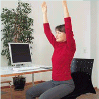
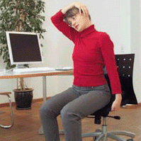
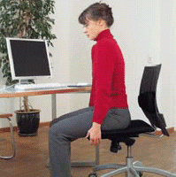
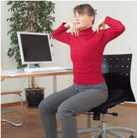
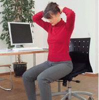

Das Minuten-Ausgleichsprogramm
 |
Setzen Sie sich aufrecht auf den Stuhl, richten Sie die Arme nach oben und strecken Sie sich. Atmen Sie dabei mehrmals tief ein und aus. |
 |
Halten Sie sich mit einer Hand an der Sitzfläche des Stuhls fest. Greifen Sie mit der anderen Hand über den Kopf und fassen Sie die gegenüberliegende Kopfseite. Ziehen Sie den Kopf behutsam zur Seite. |
 |
Setzen Sie sich aufrecht auf den Stuhl, ohne den Rücken anzulehnen. Kreisen Sie mit den Schultern. Erst in Richtung nach vorne-oben, dann nach hinten-unten. Dreimal wiederholen. |
 |
Legen Sie die Fingerspitzen auf die Schultern und kreisen Sie mit den Ellenbögen langsam vorwärts und rückwärts. |
 |
Verschränken Sie die Hände am Hinterkopf und drücken Sie den Kopf 6-8 Sekunden lang in die Hände. Anschließend die Spannung lösen und den Kopf 20 Sekunden lang mit den Händen nach vorn ziehen. |